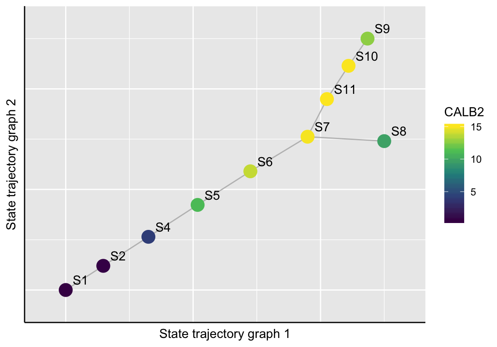

Chapter 6 Sample Ordering
CellTrails assumes that the arrangement of samples in the computed latent space constitutes a trajectory. CellTrails aims to place single samples along a maximum parsimony tree, which resembles a branching developmental continuum. Distances between samples in the latent space are computed using the Euclidean metric.
6.1 State Trajectory Graph
To avoid overfitting and to facilitate the accurate identification of bifurcations, CellTrails simplifies the problem. Analogous to the idea of a ‘broken-stick regression’, CellTrails groups the data and performs linear fits to separate trajectory segments, which are determined by the branching chronology of states. This leaves the optimization problem of finding the minimum number of associations between states that maximize the total parsimony. In theory, this problem can be solved by any minimum spanning tree algorithm. CellTrails adapts this concept by assuming that adjacent states should be located nearby and, therefore, share a relative high number of neighboring samples.
Each state defines a submatrix of samples that is composed of a distinct set of data vectors, i.e. each state is a distinct set of samples represented in the lower-dimensional space. For each state, CellTrails identifies the l-nearest neighbors to each state’s data vector and takes note of their state memberships and distances. This results in two vectors of length l times the state size. Subsequently, CellTrails removes spurious neighbors (outliers/false-positive neighbors), which are statistically too distal. For each state CellTrails calculates the relative frequency on how often a state occurs in the neighborhood of a given state, which is referred to as the interface cardinality scores.
CellTrails implements a greedy algorithm to find the tree maximizing the total interface cardinality score, similar to Kruskal’s minimum spanning tree algorithm (Kruskal 1956). The graph construction has a relaxed requirement (number of edges < number of nodes) compared to a tree (number of edges = number of nodes - 1), which may result in a graph having multiple tree components (= forest) indicating potentially independent trajectories or isolated nodes.
Please note that the function connectStates can be adjusted, such that the resulting number of components may be lower or higher by increasing or decreasing the parameter l, respectively.
# State trajectory graph computation
exBundle <- connectStates(exBundle, l=10)## Calculating layout of state trajectory graph component 1...## Calculating layout of state trajectory graph component 2...In our example dataset, we identified two components, as indicated by the Trajectories entity of the showTrajInfo function: component 1 is a tree with 10 states connected by 9 edges, and component 2 is an isolated state (one state, zero edges).
# Show trajectory information
showTrajInfo(exBundle)## [[ CellTrails ]]
## logcounts: 183 features, 1008 samples
## Pheno data:
## sampleNames: "Cell-1-1" "Cell-1-2" ... "Cell-11-82" (1008)
## phenoNames: "fm143" "origin" "state" (3)
## Feature data:
## featureNames: "ABCA5" "ARF1" ... "USH2A" (183)
## rowData: none
## Trajectory data:
## trajFeatureNames: "ABCA5" "ARF1" ... "USH2A" (183)
## latentSpace: 1008 samples, 9 dimensions
## states: "S1" "S2" ... "S11" (11)
## Trajectories: [Component(#Vertices,Edges)]: 1(10,9) 2(1,0)
## trajSampleNames: "Cell-1-1" "Cell-1-2" ... "Cell-11-82" (1008)
## trajResiduals: MSE=NA
## landmarks: none
## trajLayout: none
## Trail data:
## trailNames: noneThe function trajComponents provides us information about the states contained in each component.
# Show trajectory information
trajComponents(exBundle)## [[1]]
## [1] "S1" "S2" "S4" "S5" "S6" "S7" "S8" "S9" "S10" "S11"
##
## [[2]]
## [1] "S3"Further, the inferred state trajectory graph can be visualized using plotStateTrajectory. If the graph is a forest, the parameter component can be used to define which tree should be shown. The optional parameters point_size and label_offset are useful to adjust the graph layout, the size of the points and the relative position of the point labels, respectively. Let’s have a look at the FM1-43 uptake and the CALB2 expression in component 1:
# FM1-43 uptake
plotStateTrajectory(exBundle, color_by="phenoName", name="fm143",
component=1, point_size=1.5, label_offset=4)The plotStateTrajectory function uses the Fruchterman-Reingold graph layout algorithm (Fruchterman and Reingold 1991) for visualization. If the user needs to re-compute the layout, it can be achieved by setting the parameter recalculate=TRUE. The new layout should then be stored to the SingleCellExperiment object.
# FM1-43 uptake
gp <- plotStateTrajectory(exBundle, color_by="phenoName", name="fm143",
component=1, point_size=1.5, label_offset=4,
recalculate=TRUE)## Calculating layout of state trajectory graph ...gp# Store layout
stateTrajLayout(exBundle) <- gp
# CALB2 exoression
plotStateTrajectory(exBundle, color_by="featureName", name="CALB2",
component=1, point_size=5)
6.2 Aligning Samples Onto the Trajectory
For the sake of simplicity and performance, it makes sense to conduct subsequent steps for each component individually. In this case, we select the tree formed by graph component 1 with 896 samples for our example data analysis.
# Select trajectory
exBundle <- selectTrajectory(exBundle, component=1)The function trajSampleNames returns the names of the 896 samples which were selected for trajectory reconstruction. If further details or analyses are of interest for this set of samples exclusively, the SingleCellExperiment object can be subset.
# Subset SingleCellExperiment object by
# trajectory sample names
exBundle_subset <- exBundle[, trajSampleNames(exBundle)]
# Plot state sizes
plotStateSize(exBundle_subset)As expected, the isolated state S3 (trajectory graph component 2) is not contained in this subset.
The selected graph component defines the trajectory backbone. The function fitTrajectory embeds the trajectory structure in the latent space by computing straight lines passing through the mediancentres (Bedall and Zimmermann 1979) of adjacent states. Then, a fitting function is learned. Each sample is projected to its most proximal straight line passing through the mediancentre of its assigned state. Here, whenever possible, orthogonal projections onto line segments between two mediancentres are preferred to line segments which are only incident to a single median centre. Fitting deviations are given by the Euclidean distance between the sample’s location and the straight line, and are indicated by an aggregated statistic (Mean Squared Error, MSE) shown by showTrajInfo and can be directly accessed via trajResiduals. Finally, a weighted acyclic trajectory graph can be constructed based on each sample’s position along its straight line. Nodes in this graph are samples; edges are constructed between neighboring samples. Each edge is weighted by the distance between its nodes along the straight line.
# Align samples onto trajectory
exBundle <- fitTrajectory(exBundle)
showTrajInfo(exBundle)## [[ CellTrails ]]
## logcounts: 183 features, 1008 samples
## Pheno data:
## sampleNames: "Cell-1-1" "Cell-1-2" ... "Cell-11-82" (1008)
## phenoNames: "fm143" "origin" ... "landmark" (4)
## Feature data:
## featureNames: "ABCA5" "ARF1" ... "USH2A" (183)
## rowData: none
## Trajectory data:
## trajFeatureNames: "ABCA5" "ARF1" ... "USH2A" (183)
## latentSpace: 1008 samples, 9 dimensions
## states: "S1" "S2" ... "S11" (11)
## Trajectories: [Component(#Vertices,Edges)]: 1(10,9)
## trajSampleNames: "Cell-1-1" "Cell-1-2" ... "Cell-11-82" (896)
## trajResiduals: MSE=9.9e-03
## landmarks: #Branches=7 #Terminals=9 #User=0
## trajLayout: none
## Trail data:
## trailNames: nonetrajResiduals(exBundle)[1:5]## [1] 0.008616594 0.008064917 0.004659595 0.039835749 0.017354939Of note, the fitting function implies potential side branches in the trajectory graph; those could be caused due to technical variance or encompass samples that were statistically indistinguishable from the main trajectory given the selected features used for trajectory reconstruction. The plotTrajectoryFit function shows the trajectory backbone (longest shortest path between two samples) and the fitting deviations of each sample indicated by the perpendicular jitter.
plotTrajectoryFit(exBundle)References
Kruskal, JB. 1956. “On the Shortest Spanning Subtree of a Graph and the Traveling Salesman Problem.” Proc Amer Math Soc 7: 48–50.
Fruchterman, TMJ, and EM Reingold. 1991. “Graph Drawing by Force-Directed Placement.” Software - Practice and Experience 21 (11): 1129–64.
Bedall, FK, and H Zimmermann. 1979. “Algorithm As143. the Mediancentre.” Appl Statist 28: 325–28.